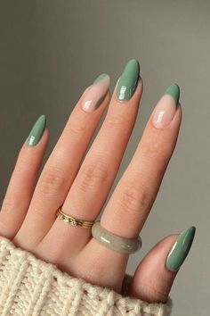
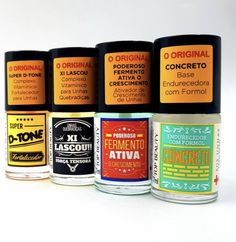
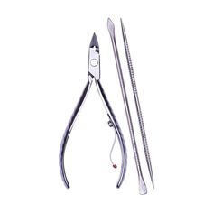
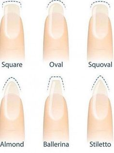
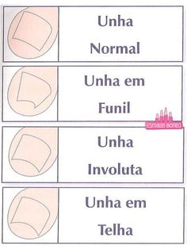
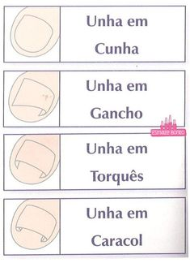
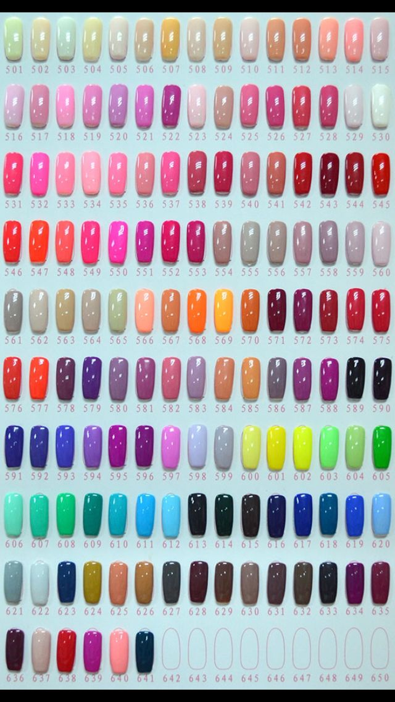

Cores
Em princípio, você pode seguir o critério de cores neutras, como os nudes, para qualquer cor de roupa. Além disso, considere também a textura dos tecidos. Assim, para um vestido com muito brilho, aposte em esmaltes foscos. Já os looks estampados podem ser complementados com unhas multicoloridas.
Bases
O uso da base vai além da questão estética, A base de unha também serve como ajuda extra quando o assunto é proteger, fortalecer e nivelar as unhas.
Materiais
O ideal é que você tenha o seu próprio material. Dicas dos principais materiais “Como esterilizar?”
Formatos
Quadrada: Ideal para dedos longo e grossos
Oval: Ideal para dedos curtos e grossos
Ballerina e stileto: Ideal para dedos longos
Qual é o formato da sua unha?
Qual é o formato da sua unha?
• Cuide da suas unhas!
• Aumenta a autoestima
• Causam uma boa impressão • Transmite limpeza e higiene
• Mostra sua personalidade
Cores
Combinar a cor do esmalte com a roupa pode ser divertido e realçar o seu estilo. Vou te dar algumas dicas de cores de esmalte que harmonizam bem com diferentes tipos de roupas: Vermelho: Um clássico! Esmalte vermelho é versátil e combina com muitos trajes. Seja um vestido preto, azul ou até mesmo estampado, unhas vermelhas sempre adicionam um toque de elegância e ousadia. Nude: Os tons nude são perfeitos para um visual discreto e sofisticado.
Escolha um tom que se assemelhe à cor da sua pele para um estilo monocromático ou experimente variações como nude rosado, amarelado ou acinzentado. Marrom Acinzentado: Esse tom neutro é uma escolha infalível.
Ele combina com absolutamente tudo e pode ser usado tanto em ocasiões formais quanto informais. Branquinhos e Naturais: Unhas bem cuidadas não precisam necessariamente de esmalte colorido. Um simples esmalte transparente ou branquinho pode dar um brilho sutil e natural às unhas. Lembre-se de que a harmonia das cores é importante. Se você quiser se aprofundar, conheça o círculo das cores e a teoria das cores para criar combinações agradáveis aos olhos. E, claro, divirta-se experimentando diferentes cores de esmalte com suas roupas!
